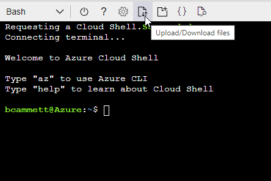
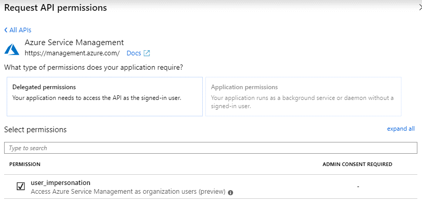
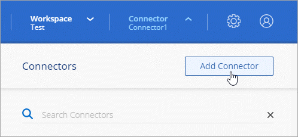

リリースノート
リリースノート
BlueXPからAzureにコネクタを作成します
 変更を提案
変更を提案
BlueXPからAzureでコネクタを作成するには、ネットワークを設定し、Azureの権限を準備してから、コネクタを作成する必要があります。
確認が必要です "コネクタの制限"。
手順1：ネットワークをセットアップする
コネクタをインストールするネットワークの場所が、次の要件をサポートしていることを確認します。これらの要件を満たすことで、コネクタはハイブリッドクラウド環境内のリソースとプロセスを管理できるようになります。
- Azure リージョン
-
Cloud Volumes ONTAPを使用する場合は、コネクタを管理するCloud Volumes ONTAPシステムと同じAzureリージョンまたはに導入する必要があります "Azure リージョンペア" Cloud Volumes ONTAP システム用。この要件により、 Cloud Volumes ONTAP とそれに関連付けられたストレージアカウント間で Azure Private Link 接続が使用されるようになります。
- VNetおよびサブネット
-
コネクタを作成するときは、コネクタを配置するVNetとサブネットを指定する必要があります。
- ターゲットネットワークへの接続
-
コネクタには、作業環境を作成および管理する予定の場所へのネットワーク接続が必要です。たとえば、オンプレミス環境にCloud Volumes ONTAPシステムやストレージシステムを作成するネットワークなどです。
- アウトバウンドインターネットアクセス
-
コネクタを展開するネットワークの場所には、特定のエンドポイントに接続するためのアウトバウンドインターネット接続が必要です。
- コネクタから接続されたエンドポイント
-
このコネクタは、パブリッククラウド環境内のリソースとプロセスを日常的に管理するために、次のエンドポイントに接続するためのアウトバウンドインターネットアクセスを必要とします。
次に示すエンドポイントはすべてCNAMEエントリであることに注意してください。
エンドポイント 目的 https://management.azure.com
https://login.microsoftonline.com
https://blob.core.windows.net
https://core.windows.netAzureパブリックリージョン内のリソースを管理します。
https://management.chinacloudapi.cn
https://login.chinacloudapi.cn
https://blob.core.chinacloudapi.cn
https://core.chinacloudapi.cnをクリックしてAzure中国地域のリソースを管理してください。
ライセンス情報を取得し、ネットアップサポートに AutoSupport メッセージを送信するため。
https://*.api.bluexp.netapp.com
https://api.bluexp.netapp.com
https://*.cloudmanager.cloud.netapp.com
https://cloudmanager.cloud.netapp.com
https://netapp-cloud-account.auth0.com
BlueXPでSaaSの機能とサービスを提供するため。
コネクタは現在「cloudmanager.cloud.netapp.com"」に連絡していますが、今後のリリースでは「api.bluexp.netapp.com"」に連絡を開始します。
https://*.blob.core.windows.net
https://cloudmanagerinfraprod.azurecr.io
をクリックして、 Connector と Docker コンポーネントをアップグレードします。
- BlueXPコンソールからアクセスするエンドポイント
-
SaaSレイヤで提供されるWebベースのBlueXPコンソールを使用すると、IT部門は複数のエンドポイントと通信してデータ管理タスクを実行します。これには、BlueXPコンソールからコネクタを導入するために接続されるエンドポイントも含まれます。
- プロキシサーバ
-
すべての送信インターネットトラフィック用にプロキシサーバーを導入する必要がある場合は、HTTPまたはHTTPSプロキシに関する次の情報を取得します。この情報は、インストール時に入力する必要があります。
-
IP アドレス
-
クレデンシャル
-
HTTPS証明書
BlueXPでは透過型プロキシサーバはサポートされません。
-
- ポート
-
コネクタを起動するか、コネクタがCloud Volumes ONTAPからNetAppサポートにAutoSupportメッセージを送信するためのプロキシとして使用されている場合を除き、コネクタへの受信トラフィックはありません。
-
HTTP （ 80 ）と HTTPS （ 443 ）はローカル UI へのアクセスを提供しますが、これはまれに使用されます。
-
SSH （ 22 ）は、トラブルシューティングのためにホストに接続する必要がある場合にのみ必要です。
-
アウトバウンドインターネット接続を使用できないサブネットにCloud Volumes ONTAP システムを導入する場合は、ポート3128経由のインバウンド接続が必要です。
Cloud Volumes ONTAPシステムでAutoSupportメッセージを送信するためのアウトバウンドインターネット接続が確立されていない場合は、コネクタに付属のプロキシサーバを使用するように自動的に設定されます。唯一の要件は、コネクタのセキュリティグループがポート3128を介したインバウンド接続を許可することです。コネクタを展開した後、このポートを開く必要があります。
-
- NTPを有効にする
-
BlueXP分類を使用して企業データソースをスキャンする場合は、システム間で時刻が同期されるように、BlueXP ConnectorシステムとBlueXP分類システムの両方でネットワークタイムプロトコル（NTP）サービスを有効にする必要があります。 "BlueXPの分類の詳細については、こちらをご覧ください"
コネクタを作成した後で、このネットワーク要件を実装する必要があります。
手順2：カスタムロールを作成する
AzureアカウントまたはMicrosoft Entraサービスプリンシパルに割り当てることができるAzureカスタムロールを作成します。BlueXPはAzureで認証し、これらの権限を使用してコネクタインスタンスを作成します。
Azureカスタムロールは、Azureポータル、Azure PowerShell、Azure CLI、またはREST APIを使用して作成できます。Azure CLIを使用してロールを作成する手順を次に示します。別の方法を使用する場合は、を参照してください。 "Azure に関するドキュメント"
-
Azureの新しいカスタムロールに必要な権限をコピーし、JSONファイルに保存します。

このカスタムロールには、BlueXPからAzureでコネクタVMを起動するために必要な権限のみが含まれています。このポリシーは、他の状況では使用しないでください。BlueXPがコネクタを作成すると、Connector VMに新しい権限セットが適用され、Connectorがパブリッククラウド環境内のリソースを管理できるようになります。 { "Name": "Azure SetupAsService", "Actions": [ "Microsoft.Compute/disks/delete", "Microsoft.Compute/disks/read", "Microsoft.Compute/disks/write", "Microsoft.Compute/locations/operations/read", "Microsoft.Compute/operations/read", "Microsoft.Compute/virtualMachines/instanceView/read", "Microsoft.Compute/virtualMachines/read", "Microsoft.Compute/virtualMachines/write", "Microsoft.Compute/virtualMachines/delete", "Microsoft.Compute/virtualMachines/extensions/write", "Microsoft.Compute/virtualMachines/extensions/read", "Microsoft.Compute/availabilitySets/read", "Microsoft.Network/locations/operationResults/read", "Microsoft.Network/locations/operations/read", "Microsoft.Network/networkInterfaces/join/action", "Microsoft.Network/networkInterfaces/read", "Microsoft.Network/networkInterfaces/write", "Microsoft.Network/networkInterfaces/delete", "Microsoft.Network/networkSecurityGroups/join/action", "Microsoft.Network/networkSecurityGroups/read", "Microsoft.Network/networkSecurityGroups/write", "Microsoft.Network/virtualNetworks/checkIpAddressAvailability/read", "Microsoft.Network/virtualNetworks/read", "Microsoft.Network/virtualNetworks/subnets/join/action", "Microsoft.Network/virtualNetworks/subnets/read", "Microsoft.Network/virtualNetworks/subnets/virtualMachines/read", "Microsoft.Network/virtualNetworks/virtualMachines/read", "Microsoft.Network/publicIPAddresses/write", "Microsoft.Network/publicIPAddresses/read", "Microsoft.Network/publicIPAddresses/delete", "Microsoft.Network/networkSecurityGroups/securityRules/read", "Microsoft.Network/networkSecurityGroups/securityRules/write", "Microsoft.Network/networkSecurityGroups/securityRules/delete", "Microsoft.Network/publicIPAddresses/join/action", "Microsoft.Network/locations/virtualNetworkAvailableEndpointServices/read", "Microsoft.Network/networkInterfaces/ipConfigurations/read", "Microsoft.Resources/deployments/operations/read", "Microsoft.Resources/deployments/read", "Microsoft.Resources/deployments/delete", "Microsoft.Resources/deployments/cancel/action", "Microsoft.Resources/deployments/validate/action", "Microsoft.Resources/resources/read", "Microsoft.Resources/subscriptions/operationresults/read", "Microsoft.Resources/subscriptions/resourceGroups/delete", "Microsoft.Resources/subscriptions/resourceGroups/read", "Microsoft.Resources/subscriptions/resourcegroups/resources/read", "Microsoft.Resources/subscriptions/resourceGroups/write", "Microsoft.Authorization/roleDefinitions/write", "Microsoft.Authorization/roleAssignments/write", "Microsoft.MarketplaceOrdering/offertypes/publishers/offers/plans/agreements/read", "Microsoft.MarketplaceOrdering/offertypes/publishers/offers/plans/agreements/write", "Microsoft.Network/networkSecurityGroups/delete", "Microsoft.Storage/storageAccounts/delete", "Microsoft.Storage/storageAccounts/write", "Microsoft.Resources/deployments/write", "Microsoft.Resources/deployments/operationStatuses/read", "Microsoft.Authorization/roleAssignments/read" ], "NotActions": [], "AssignableScopes": [], "Description": "Azure SetupAsService", "IsCustom": "true" } -
JSONを変更して、割り当て可能な範囲にAzureサブスクリプションIDを追加します。
-
例 *
"AssignableScopes": [ "/subscriptions/d333af45-0d07-4154-943d-c25fbzzzzzzz" ], -
-
JSON ファイルを使用して、 Azure でカスタムロールを作成します。
次の手順は、 Azure Cloud Shell で Bash を使用してロールを作成する方法を示しています。
-
開始 "Azure Cloud Shell の略" Bash 環境を選択します。
-
JSON ファイルをアップロードします。

-
Azure CLI で次のコマンドを入力します。
az role definition create --role-definition Policy_for_Setup_As_Service_Azure.json
これで、 _Azure SetupAsService_という カスタムロールが作成されました。このカスタムロールをユーザーアカウントまたはサービスプリンシパルに適用できるようになりました。
-
手順3：認証を設定する
BlueXPからコネクタを作成するときは、BlueXPがAzureで認証してVMを導入するためのログインを指定する必要があります。次の 2 つのオプションがあります。
-
プロンプトが表示されたら、Azureアカウントでサインインします。このアカウントには Azure 固有の権限が必要です。これがデフォルトのオプションです。
-
Microsoft Entraサービスプリンシパルの詳細を入力します。このサービスプリンシパルには、特定の権限も必要です。
次の手順に従って、いずれかの認証方式をBlueXPで使用できるように準備します。
BlueXPからコネクタを導入するユーザにカスタムロールを割り当てます。
-
Azureポータルで、* Subscriptions *サービスを開き、ユーザーのサブスクリプションを選択します。
-
「 * アクセスコントロール（ IAM ） * 」をクリックします。
-
[ * 追加 > 役割の割り当ての追加 * ] をクリックして、権限を追加します。
-
Azure SetupAsService * ロールを選択し、 * 次へ * をクリックします。
Azure SetupAsServiceは、Azureのコネクタ導入ポリシーで指定されているデフォルトの名前です。ロールに別の名前を選択した場合は、代わりにその名前を選択します。 -
[* ユーザー、グループ、またはサービスプリンシパル * ] を選択したままにします。
-
[ * メンバーの選択 * ] をクリックし、ユーザーアカウントを選択して、 [ * 選択 * ] をクリックします。
-
「 * 次へ * 」をクリックします。
-
[ レビュー + 割り当て（ Review + Assign ） ] をクリックします。
-
これで、Azureユーザには、BlueXPからConnectorを導入するために必要な権限が付与されました。
Azureアカウントでログインする代わりに、必要な権限を持つAzureサービスプリンシパルのクレデンシャルをBlueXPに指定できます。
Microsoft Entra IDでサービスプリンシパルを作成してセットアップし、BlueXPに必要なAzureクレデンシャルを取得します。
-
Active Directoryアプリケーションを作成し、そのアプリケーションをロールに割り当てる権限がAzureにあることを確認します。
詳細については、を参照してください "Microsoft Azure のドキュメント：「 Required permissions"
-
Azureポータルで、* Microsoft Entra ID *サービスを開きます。

-
メニューで*アプリ登録*を選択します。
-
[New registration]*を選択します。
-
アプリケーションの詳細を指定します。
-
* 名前 * ：アプリケーションの名前を入力します。
-
アカウントの種類:アカウントの種類を選択します(すべてのアカウントはBlueXPで動作します)。
-
* リダイレクト URI *: このフィールドは空白のままにできます。
-
-
[*Register] を選択します。
AD アプリケーションとサービスプリンシパルを作成しておきます。
-
Azure ポータルで、 * Subscriptions * サービスを開きます。
-
サブスクリプションを選択します。
-
[* アクセス制御 (IAM)] 、 [ 追加 ] 、 [ 役割の割り当ての追加 *] の順にクリックします。
-
[役割]タブで、[ BlueXP演算子*]役割を選択し、[次へ]をクリックします。
-
[* Members* （メンバー * ） ] タブで、次の手順を実行します。
-
[* ユーザー、グループ、またはサービスプリンシパル * ] を選択したままにします。
-
[ メンバーの選択 ] をクリックします。

-
アプリケーションの名前を検索します。
次に例を示します。

-
アプリケーションを選択し、 * Select * をクリックします。
-
「 * 次へ * 」をクリックします。
-
-
[ レビュー + 割り当て（ Review + Assign ） ] をクリックします。
サービスプリンシパルに、 Connector の導入に必要な Azure 権限が付与されるようになりました。
複数のAzureサブスクリプションでリソースを管理する場合は、各サブスクリプションにサービスプリンシパルをバインドする必要があります。たとえば、BlueXPでは、Cloud Volumes ONTAPの導入時に使用するサブスクリプションを選択できます。
-
Microsoft Entra ID *サービスで、*アプリ登録*を選択し、アプリケーションを選択します。
-
[API permissions]>[Add a permission]*を選択します。
-
Microsoft API* で、 * Azure Service Management * を選択します。

-
を選択し、[Add permissions]*を選択します。

-
Microsoft Entra ID *サービスで、*アプリ登録*を選択し、アプリケーションを選択します。
-
アプリケーション（クライアント） ID * とディレクトリ（テナント） ID * をコピーします。

AzureアカウントをBlueXPに追加するときは、アプリケーション（クライアント）IDとディレクトリ（テナント）IDを指定する必要があります。BlueXPでは、プログラムでサインインするためにIDが使用されます。
-
Microsoft Entra ID *サービスを開きます。
-
*アプリ登録*を選択し、アプリケーションを選択します。
-
[Certificates & secrets]>[New client secret]*を選択します。
-
シークレットと期間の説明を入力します。
-
「 * 追加」を選択します。
-
クライアントシークレットの値をコピーします。

BlueXPでクライアントシークレットを使用してMicrosoft Entra IDで認証できるようになりました。
これでサービスプリンシパルが設定され、アプリケーション（クライアント） ID 、ディレクトリ（テナント） ID 、およびクライアントシークレットの値をコピーしました。コネクタを作成するときに、BlueXPでこの情報を入力する必要があります。
手順4：コネクタを作成する
BlueXPのWebベースのコンソールから直接コネクタを作成します。
BlueXPからコネクタを作成すると、デフォルトの設定を使用してAzureに仮想マシンが導入されます。コネクタの作成後は、CPUやRAMが少ないVMタイプに変更しないでください。 "コネクタのデフォルト設定について説明します"。
次の情報が必要です。
-
Azure サブスクリプション。
-
選択した Azure リージョン内の VNet およびサブネット
-
すべての発信インターネットトラフィックにプロキシを必要とする場合は、プロキシサーバの詳細を参照してください。
-
IP アドレス
-
クレデンシャル
-
HTTPS証明書
-
-
コネクタ仮想マシンでその認証方法を使用する場合は、SSH公開鍵。認証方法のもう1つのオプションは、パスワードを使用することです。
-
BlueXPでコネクタ用のAzureロールを自動的に作成しない場合は、自分で作成する必要があります "このページのポリシーを使用する"。
これらの権限はコネクタインスタンス自体に適用されます。これは、コネクタVMを導入するために以前に設定した権限とは異なる権限のセットです。
-
ドロップダウンを選択し、[コネクタの追加]*を選択します。

-
クラウドプロバイダとして「 * Microsoft Azure * 」を選択します。
-
[*コネクターの配置（Deploying a Connector *）]ページ：
-
[認証]*で、Azure権限の設定方法に一致する認証オプションを選択します。
-
Azureユーザーアカウント*を選択して、必要な権限があるMicrosoftアカウントにログインします。
このフォームは、 Microsoft が所有およびホストしています。クレデンシャルがネットアップに提供されていません。

すでにAzureアカウントにログインしている場合は、BlueXPによって自動的にそのアカウントが使用されます。アカウントが複数ある場合は、適切なアカウントを使用するために、最初にログアウトする必要があります。 -
[Active Directory service principal]*を選択して、必要な権限を付与するMicrosoft Entraサービスプリンシパルに関する情報を入力します。
-
アプリケーション（クライアント）ID
-
ディレクトリ（テナント）ID
-
クライアントシークレット
-
-
-
-
ウィザードの手順に従って、コネクタを作成します。
-
* VM認証*：Azureサブスクリプション、場所、新しいリソースグループ、または既存のリソースグループを選択し、作成するコネクタ仮想マシンの認証方法を選択します。
仮想マシンの認証方法には、パスワードまたはSSH公開鍵を使用できます。
-
詳細:インスタンスの名前を入力し、タグを指定して、必要な権限を持つ新しいロールを作成するか、またはで設定した既存のロールを選択するかを選択します "必要な権限"。
このロールに関連付けられているAzureサブスクリプションを選択できることに注意してください。選択した各サブスクリプションには、そのサブスクリプション内のリソースを管理するためのコネクタ権限（Cloud Volumes ONTAPなど）が用意されています。
-
* ネットワーク * ： VNet とサブネットを選択し、パブリック IP アドレスを有効にするかどうか、および必要に応じてプロキシ設定を指定します。
-
セキュリティグループ:新しいセキュリティグループを作成するか、必要なインバウンドおよびアウトバウンドルールを許可する既存のセキュリティグループを選択するかを選択します。
-
* 復習 * ：選択内容を確認して、設定が正しいことを確認してください。
-
-
[ 追加（ Add ） ] をクリックします。
仮想マシンの準備が完了するまでに約 7 分かかります。処理が完了するまで、ページには表示されたままにしておいてください。
プロセスが完了すると、BlueXPからコネクタを使用できるようになります。
コネクタを作成したAzureサブスクリプションと同じAzure BLOBストレージがある場合は、BlueXPキャンバスにAzure BLOBストレージの作業環境が自動的に表示されます。 "BlueXPからAzure Blobストレージを管理する方法"